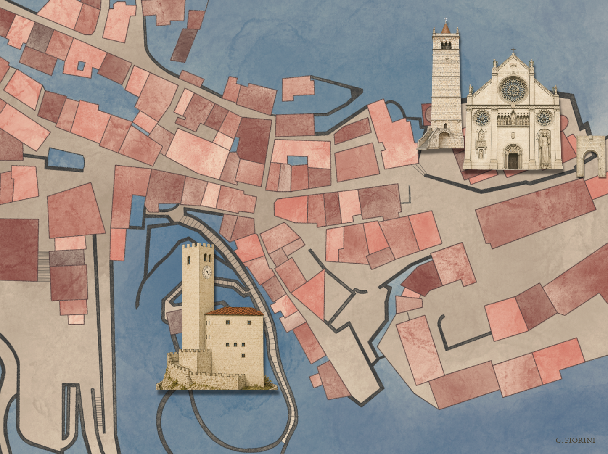

Nel cuore antico di Gemona rivivono i fasti medievali e rinascimentali: il corteo in costume, la solenne consegna del Tallero d'argento al Capitano del Popolo, i giullari, i musici e le taverne dei borghi.
Seleziona la giornata e filtra per tipologia di appuntamento per organizzare la tua visita a Gemona.
* Gli orari potrebbero subire lievi variazioni per esigenze organizzative o condizioni meteo.
Clicca sui punti della mappa del centro storico di Gemona per scoprire taverne, piazze degli spettacoli, infopoint e parcheggi.

Piatti della tradizione friulana, carni alla brace, frico e vini del territorio.
Nel Medioevo e nel Rinascimento, Gemona del Friuli rappresentava uno snodo commerciale e strategico imprescindibile lungo la via che collegava l'Adriatico al mondo germanico. Grazie al diritto di Niederlech (l'obbligo per i mercanti di passaggio di scaricare e mettere in vendita le proprie merci in città), Gemona divenne un centro florido e vivace.
La Festa del Tallero rievoca il momento solenne in cui il Capitano del Popolo e le autorità cittadine ricevevano il tributo simbolico e celebravano l'unione tra i borghi e le contrade della città.
Ancora oggi, durante i giorni della manifestazione, i figuranti in abiti storici fedelmente ricostruiti, gli sbandieratori, i tamburini e gli artigiani riportano le vie del centro all'atmosfera autentica di un tempo.
"Un simbolo di libertà civica, accoglienza e orgoglio per l'intera comunità gemonese."
Rievocazione Storica • Pro Loco Gemona
Il Tallero era una moneta d'argento di grande prestigio diffusa in tutta l'area mitteleuropea. Durante la festa viene coniato un esemplare commemorativo speciale.
I borghi storici di Gemona si sfidano in giochi di abilità, tiro con l'arco e prove di destrezza per conquistare l'ambito drappo e l'onore della vittoria.
Centinaia di figuranti, nobili, popolani, armigeri e gruppi ospiti sfilano lungo Via Bini fino al Duomo e a Piazza del Ferro tra squilli di chiarine.
Tutto quello che serve per raggiungere Gemona del Friuli comodamente e godersi la festa senza pensieri.
Evento organizzato dall'Associazione Pro Loco Gemona in collaborazione con il Comune di Gemona del Friuli e i borghi cittadini.